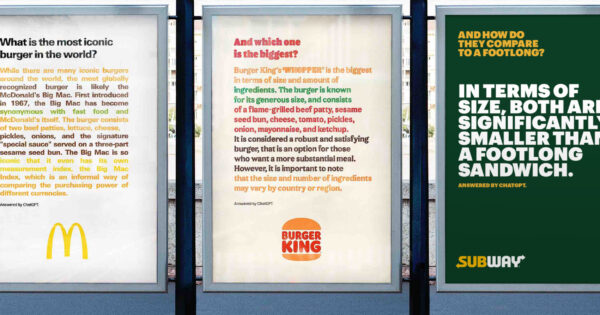

Fast Food Brands Duel With ChatGPT-Generated Ads

The fast food industry has always been competitive, with brands competing fiercely for market share. To stand out, McDonald's, Burger King and Subway have taken a new approach to advertising - by using chatbots to showcase their strengths.
These chatbots, powered by artificial intelligence, provide a way for customers to interact with these brands in a new, innovative way. They offer personalized experiences for customers, and are capable of answering questions, providing suggestions and guiding customers through the ordering process.
Here are some examples of how these brands are using chatbots to reach out to customers:
- McDonald's: McDonald's has developed a chatbot that allows customers to place an order easily and quickly. The chatbot is designed to be conversational and engaging, and can make suggestions based on the customer's preferences. This has helped McDonald's to increase sales and improve customer satisfaction.
- Burger King: Burger King has launched a chatbot that serves as a virtual assistant for customers. The chatbot can answer questions about the menu, nutritional information and allergens, as well as help customers place an order. It can also make personalized recommendations based on the customer's responses.
- Subway: Subway's chatbot is focused on providing an interactive, personalized experience for customers. The chatbot can ask questions about the customer's preferences and dietary restrictions, and provide suggestions based on the responses. It can also guide customers through the ordering process, making it quick and easy to place an order.
Using chatbots has allowed these brands to connect with customers in a more meaningful way, and provide a better customer experience. By making the ordering process easier and more personalized, these brands have been able to increase sales and improve customer satisfaction.
Here are three key takeaways from this trend:
- Increased customer engagement: By providing a new way for customers to interact with the brand, chatbots have helped to increase customer engagement. Customers are more likely to remember and return to a brand that offers personalized experiences.
- Improved efficiency: Using chatbots has allowed these brands to automate many of the repetitive tasks involved in ordering. This has helped to improve efficiency and reduce wait times for customers. By making the ordering process quick and easy, customers are more likely to return to the brand
- Better customer experience: Chatbots have helped to provide a more personalized customer experience, making it easier for customers to place orders, get answers to questions and receive suggestions on menu items. This has helped to improve customer satisfaction, and can lead to increased sales.
As the fast food industry continues to evolve, it's clear that chatbots are becoming an important tool for brands to connect with customers. By offering personalized experiences and improving efficiency, these brands have been able to stay competitive and appeal to new audiences.
References:
#fastfood #chatbots #marketing #artificialintelligence
Curated by Team Akash.Mittal.Blog
Curated by Team Akash.Mittal.Blog
Share on Twitter Share on LinkedIn